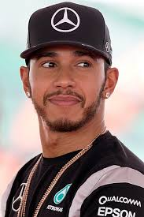
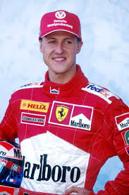
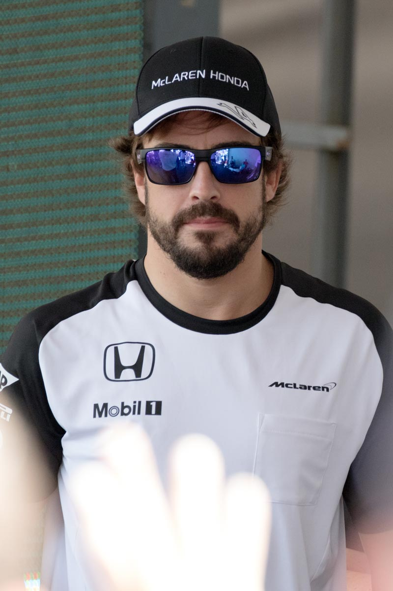

A Forma 1 a világ legnagyobb és legismertebb autósport bajnoksága, amelyet az FIA szervez. Az első Forma 1-es világbajnokságot 1950-ben rendezték meg, és azóta is folyamatosan nő a népszerűsége.
A Forma 1 története tele van izgalmas eseményekkel és technológiai újításokkal. A versenysorozat a motorsport csúcsát képviseli, ahol a leggyorsabb autók és a legjobb pilóták mérik össze tudásukat. Az évek során számos ikonikus pilóta, mint Ayrton Senna, Michael Schumacher, és Lewis Hamilton vált legendává a sportágban.
| Év | Versenyző | Csapat | Nemzetiség |
|---|---|---|---|
| 2023 | Max Verstappen | Red Bull Racing | Holland |
| 2022 | Max Verstappen | Red Bull Racing | Holland |
| 2021 | Max Verstappen | Red Bull Racing | Holland |
| 2020 | Lewis Hamilton | Mercedes | Brit |
| 2019 | Lewis Hamilton | Mercedes | Brit |
| 2018 | Lewis Hamilton | Mercedes | Brit |
| 2017 | Lewis Hamilton | Mercedes | Brit |
| 2016 | Nico Rosberg | Mercedes | Német |
| 2015 | Lewis Hamilton | Mercedes | Brit |
| 2014 | Lewis Hamilton | Mercedes | Brit |
Lewis Hamilton hétszeres világbajnok, és a sportág egyik legsikeresebb pilótája. A brit versenyző a Mercedes csapat színeiben érte el sikereit, és számos rekordot döntött meg karrierje során.
Michael Schumacher hétszeres világbajnok, és a Ferrari csapat ikonjává vált. A német pilóta számos rekordot állított fel, és neve örökre összeforrt a Forma 1 történetével.A 2013-ban bekövetkezett sajnálatos sí balesete óta csak a család szűszavú közléseiből tudunk állaptáról.A lehető legjobbakat kívánjuk a legendának!

Fernando Alonso kétszeres világbajnok spanyol pilóta, aki a Renault csapat színeiben érte el legnagyobb sikereit. Alonso az egyik legtehetségesebb és legkitartóbb versenyző a mezőnyben.
Formula 1: Hajsza a túlélésért (eredeti cím: Formula 1: Drive to Survive) egy dokumentumfilm-sorozat, ami a Formula 1 Group és a Netflix koprodukciójában készül. Az epizódok dramatizálva mutatják be egy-egy Formula-1-es bajnokság eseményeit, egy-egy évad mindig egy szezont foglal magába. A sorozat 2019. március 8-án debütált a Netflixen, és azóta elkészült a második és harmadik évad is. Utóbbi hazánkban már magyar szinkronnal debütált, melyben két magyar Formula–1-es kommentátor, Szujó Zoltán és Wéber Gábor is közreműködtek. A sorozat hatodik évada a 2023-as világbajnokságról 2024. februárjában jelent meg.
2018 márciusában a Formula 1 Group bejelentette, hogy szerződést kötöttek a Netflixszel annak érdekében, hogy egy tíz epizódból álló minisorozatot készítsenek, és ennek keretén belül dokumentálják a 2018-as Formula-1-es világbajnokság történéseit. Ebbe nem egyezett bele minden csapat, éppen a két legnagyobb, a Mercedes és a Ferrari voltak azok, akik elzárkóztak, így a sorozat úgy készült el, hogy őket kihagyták a mélyebb elemzésekből (bár természetesen felbukkannak a sorozatban). Mivel a sorozat készítői amerikaiak, így az amerikai háttérrel induló Haas csapat kiemelt helyen szerepel benne. Ugyan valós eseményeket dolgoz fel, azokat sok esetben kissé túldramatizálva jelenítik meg. A sorozat nagy népszerűséget ért el, így ennek megfelelően berendelték a folytatást, méghozzá mind a tíz csapat részvételével.